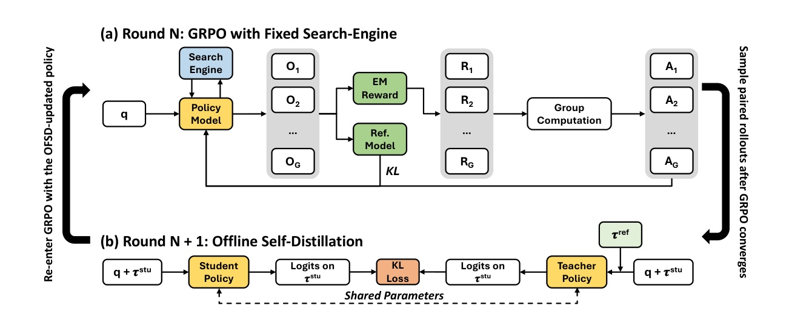
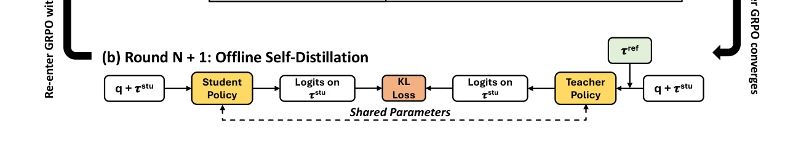
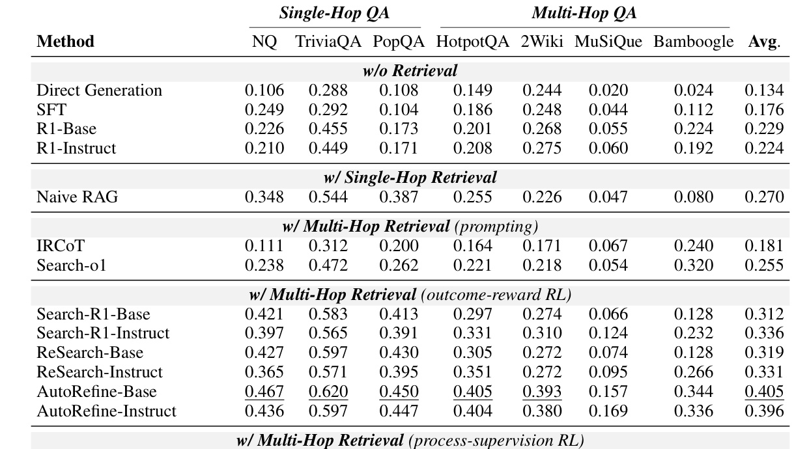

Search-E1：Search-E1: Self-Distillation Drives Self-Evolution in Search-Augmented Reasoning
这里精读一篇 2026-05-21 公开在 arXiv 的论文《Search-E1: Self-Distillation Drives Self-Evolution in Search-Augmented Reasoning》。中文可以叫《自蒸馏驱动搜索增强推理智能体自进化》。
论文链接：arXiv:2605.22511 作者：Zihan Liang, Yufei Ma, Ben Chen, Zhipeng Qian, Xuxin Zhang, Huangyu Dai, Lingtao Mao 机构/团队：论文首页未清晰列出统一机构；本轮按多校/团队记录。 公开日期：2026-05-21 submitted；arXiv 2605.22511，来源：arXiv cs.AI / cs.CL / cs.IR。 代码/项目页：arXiv 页面和 PDF 本轮未核验到独立代码仓库。 本地 PDF：多校-SearchE1.pdf。
0. 导读
它针对搜索增强推理训练中的“复杂组件堆叠”做减法：只用 vanilla GRPO 和 offline self-distillation，让 agent 从自己的 sibling rollout 中学习更有效搜索路径。对 RAG/搜索 Agent 训练很有迁移价值。
Search-E1 在 Search-R1 协议上训练，训练集结合 NQ 与 HotpotQA 约 170k 问答，评测覆盖 NQ、TriviaQA、PopQA、HotpotQA、2Wiki、MuSiQue、Bamboogle 七个 QA benchmark。论文报告 Qwen2.5-3B 设置下平均 EM 0.440，相对最强 outcome-reward baseline AutoRefine-Base 为 0.405，并在多跳问题上收益更明显。
从今天的候选池看，这篇论文的价值不只是提出一个模型名，而是把推荐或大模型系统中的一个真实工程矛盾拆开：模型能力、候选边界、证据质量、推理成本和线上稳定性不能只靠单一指标解释。下面按背景、方法、实验、个人理解和复现建议展开。
1. 背景与问题
搜索增强推理 Agent 的训练正在变复杂。很多方法在标准 outcome reward 之外加入过程奖励模型、树搜索、外部强模型监督、retrospective critic 或手工 reward shaping。每个组件都可能带来收益，但也带来训练成本、实现复杂度和对外部资源的依赖。
Search-E1 的问题是：一个搜索增强模型是否可以只依靠自己的 rollout 进化？如果模型在同一个问题上会产生多条 sibling trajectories，其中某些路径更短、更有效或更容易命中答案，那么能否把这种内部差异转化成训练信号？
这个问题与推荐系统也有连接。搜索 Agent 和推荐召回都面对“候选探索路径”的选择：什么时候检索、检索什么、如何使用证据、何时停止。如果自蒸馏能稳定改善搜索策略，类似思想也可用于推荐 agent 的候选解释与交互式检索。

Figure 1（原文图 1）把 Search-E1 的训练拆成两个回合：上半部分是固定搜索引擎下的 GRPO，使用 exact-match outcome reward；下半部分是 OFSD，自身 rollout 作为学生轨迹，privileged context 下的 sibling trajectory 作为教师分布。它的核心是让模型从自己已经能产生的更高效搜索路径中学习，而不是依赖外部大模型或过程奖励模型。 放在背景部分看，它说明论文真正要解决的是系统链路中的瓶颈，而不是单纯追求一个更复杂的网络结构。这个图也给后续方法拆解建立了参照：哪些信息应该先保留，哪些信息应该等到任务或候选明确后再使用。
2. 核心方法
Search-E1 交替执行 GRPO 与 OFSD。GRPO 阶段使用固定搜索引擎和 exact-match outcome reward，不引入复杂过程监督。模型基于问题进行搜索、阅读和回答，按最终答案是否命中得到组相对奖励。
OFSD 阶段是论文的核心。模型先对训练问题生成自己的轨迹，再选择同题 sibling rollout 中更有效的参考上下文，构成 privileged context。学生在原轨迹条件下输出，教师在多看到参考轨迹的条件下输出，训练目标是让学生分布靠近教师分布。
这种 forward KL 不直接要求学生复制完整参考答案，而是在 token 级别对推理过程中的生成位置做对齐。它相当于把“如果我知道另一条更好路径，我此刻会怎么说”蒸馏回普通推理条件。
作者强调 OFSD 与 GRPO 是模块化交替，可重启、可调度。这个设计对工程很重要，因为搜索增强训练容易失败；把探索和巩固分开，有利于定位是哪一阶段带来收益或退化。

Figure 1(b) detail（原文图 1 下半部分）展示 OFSD 过程的局部细节。学生 policy 条件是 q 加当前轨迹，teacher policy 多看到参考轨迹，二者在学生生成位置上做 token-level forward KL。工程上这比直接蒸馏答案更细，因为它蒸馏的是搜索增强推理过程中的分布偏好。 方法图或结果表在这里的作用是把抽象概念落到可实现模块。复现时应优先复刻这些模块之间的输入输出，而不是只记住论文里的缩写。尤其要关注哪些信号是训练期可得、哪些信号是查询或候选确定后才可得，避免把离线信息泄露到线上评估。
3. 实验与结果
训练数据遵循 Search-R1 协议，合并 Natural Questions 与 HotpotQA 的训练集，约 170k question-answer pairs。评测覆盖三个单跳数据集 NQ、TriviaQA、PopQA，以及四个多跳数据集 HotpotQA、2WikiMultihopQA、MuSiQue、Bamboogle，共 51,713 个评测样本。
主结果显示 Qwen2.5-3B 下 Search-E1 平均 EM 为 0.440，高于 AutoRefine-Base 的 0.405。单跳数据集提升较小，多跳数据集提升更明显，尤其 Bamboogle 的差距较大。作者把这归因于多跳任务需要更多搜索步骤，sibling rollout 分歧更能提供蒸馏信号。
实验设计的一个优点是对比了 outcome-reward baseline，而不是只和未经训练模型比较。一个需要谨慎的地方是 EM 指标无法完全衡量证据忠实性，模型可能答对但使用了不充分或偶然的检索路径。

Table 1（原文表 1）是七个 QA benchmark 的主结果。Search-E1 的平均 EM 达到 0.440，并且多跳数据集收益更明显。这个表支持作者的关键判断：OFSD 对需要多轮搜索和证据组合的问题更有效，因为 sibling rollout 的路径差异提供了可学习的搜索策略信号。 读这类结果时不能只看最高值，还要看作者控制了哪些变量。若实验同时改变 backbone、特征、数据切分和后处理，就很难判断收益来源；本轮笔记只采纳论文文本能支撑的结论，对未公开的线上绝对指标和未核验代码状态保持保守。
4. 我的理解
Search-E1 的实用意义是把“自进化”做得更朴素。它没有要求强外部教师，也没有构造复杂过程 reward，而是利用同一模型在同一问题上的多路径差异。对很多团队来说，这比维护人工标注步骤奖励更可行。
我认为它特别适合搜索成本可控的 RAG 训练。只要能离线生成多条轨迹，就可以筛出更有效的 evidence path，再把这种路径压回模型。它对线上 RAG 的价值是减少无效搜索、改善多跳问题的检索顺序。
可能被高估的是“自我”这个概念。模型仍然依赖 exact-match 答案、训练问题分布和固定搜索引擎。它不是无监督自学，而是在有答案监督的任务里做 rollout 内部蒸馏。换到开放式任务、推荐解释或无唯一答案任务时，需要重新设计 reward。
进一步说，这篇论文可以作为今天两类趋势的交叉样本：推荐系统论文越来越强调候选生成、校准、稳定性和工业链路；LLM 论文越来越强调训练后优化、记忆、检索、推理成本和 runtime。真正值得迁移的不是某个缩写，而是它如何把任务约束写进模型或系统。
5. 工程启发与复现建议
复现路径可以从现有 Search-R1 或 open-source RAG agent 开始。先用小模型和固定检索器在 NQ/HotpotQA 上跑 GRPO，保存每个问题的多条轨迹、检索证据、最终答案和 EM。
第二步实现 sibling trajectory 选择。可以按答案命中、搜索步数、证据覆盖和长度过滤出参考轨迹，再做 forward KL 蒸馏。初期不必完全复刻论文细节，先验证 OFSD 是否减少搜索步数和提高多跳 EM。
上线前应增加 evidence fidelity 评估。Exact Match 不能保证答案来自检索证据，可以加入引用覆盖、反事实删除和人工抽样，避免模型学会走捷径。
复现时建议先做最小可控实验，再逐步增加模块。第一版只需要验证核心假设是否成立；第二版再引入论文完整的训练目标、缓存策略或图结构；第三版才考虑线上 A/B。这样可以避免为了复现完整论文而忽略业务里最关键的瓶颈。
6. 局限与风险
- EM 指标不能充分衡量检索证据是否忠实，可能高估 RAG 系统可靠性。
- 方法依赖同题多条 rollout，离线训练成本随采样数和搜索调用数上升。
- 固定搜索引擎下训练出的策略可能迁移不到不同检索器或不同语料。
- 开放式、多答案或偏推荐类任务缺少 exact-match reward，需要新的自蒸馏选择准则。
- 论文未核验到独立代码仓库，复现需要根据描述自行实现训练循环。
这些局限不意味着论文没有价值，而是提醒我们把它放进真实系统时需要额外验证。尤其是推荐和 Agent 场景，离线 benchmark 与线上反馈闭环之间通常存在分布差异，任何离线提升都需要经过延迟、成本、隐私、稳定性和可解释性检查。
7. 后续跟进
- 跟进是否发布代码和 Search-R1 兼容脚本。
- 比较 Search-E1 与过程奖励模型、树搜索和外部教师蒸馏的成本收益。
- 在推荐问答或商品搜索 Agent 上尝试 sibling rollout 蒸馏。
- 加入证据忠实性指标，确认 EM 提升是否来自更好检索路径。
如果后续出现代码、项目页或会议版本，应优先核验实现细节、数据切分和指标口径。今天的笔记基于 arXiv 页面、PDF 原文和可打开的项目链接状态整理，不把未公开信息写成确定事实。
8. 精读补充：落地检查清单
围绕“搜索增强推理、GRPO 和离线自蒸馏”，我会把这篇论文的后续验证拆成事实核验、最小复现、系统接入和风险监控四层。事实核验层只回答论文到底证明了什么：哪些数据集、哪些指标、哪些 baseline、哪些设置是公开可见的，哪些只是作者在摘要或工业场景中概括的结论。最小复现层只验证一个核心假设，不急着复刻全部模块；如果核心假设在小数据、小模型或离线环境中都不稳定，就没有必要直接进入复杂实现。系统接入层关注输入输出契约，明确哪些信号来自训练期、哪些来自查询时、哪些可以进入在线链路、哪些只能作为离线分析。风险监控层则把失败模式写成指标，例如候选覆盖下降、长尾被压制、证据不忠实、延迟超预算、缓存恢复过多、用户隐私字段泄露等。
Search-E1 的复现实验应同时记录答案和路径。只看 Exact Match 会掩盖检索轨迹是否忠实，因此每条 rollout 都应保存查询、检索文档、引用片段、推理步骤、最终答案和失败原因。自蒸馏阶段选择 sibling trajectory 时，也不应只选答对轨迹，还要考虑搜索步数、证据覆盖和是否包含无关文档。迁移到推荐或商品搜索时，reward 可能不再是精确答案，而是候选覆盖、用户意图匹配、解释证据和交互成本的组合。一个实用方向是让同一推荐查询生成多条候选探索路径，再把更短、更稳、更可解释的路径蒸馏回 agent policy。
和今天其他入选论文放在一起看，这篇论文还有一个共同启发：大模型和推荐系统的结合正在从“端到端替换”走向“模块化接入”。推荐侧需要候选边界、行为反馈、广告稳定性和在线成本；LLM 侧需要搜索路径、长期记忆、KV cache 和训练后优化。真正能落地的方案通常不是把所有判断交给一个大模型，而是把大模型产生的语义或推理信号变成可度量、可缓存、可回滚、可审计的中间表示。下一步如果要继续跟进，我会优先看代码是否公开、数据切分是否可复现、指标是否包含稳定性和成本、以及论文里的模块能否独立替换到现有系统中。
9. 精读补充：指标与上线观测
我还会为这篇论文单独设计一组上线前观测指标。第一组是任务主指标，推荐论文看 Recall、NDCG、HitRate、CTR/CVR 或候选增量覆盖，LLM 论文看 Exact Match、证据覆盖、回答忠实性、峰值显存和端到端延迟。第二组是稳定性指标，例如不同随机种子、不同 prompt、不同轻微输入扰动、不同时间窗口下的候选集合和答案是否剧烈变化。第三组是成本指标，包括训练采样次数、推理 token、检索调用数、GPU 显存、P95 延迟和缓存恢复次数。第四组是风险指标，包括隐私字段泄露、历史偏好过期、错误证据改写、长尾 item 被压制、语义标签误分类和线上反馈闭环放大偏差。只有当这四组指标都能解释论文收益来源时，才适合把方法从离线笔记推进到工程试验。
这也是我今天筛选这些论文的主要原因：它们都不只给出一个更高分数，而是提供了一个可以被拆解、监控和复现的系统假设。对推荐系统来说，候选边界、行为证据、广告稳定性和 nearline 特征比“LLM 是否足够强”更关键；对大模型系统来说，搜索路径、长期记忆、KV cache 和证据蒸馏比“上下文是否更长”更关键。后续如果继续读同一方向，我会优先选择那些把这些中间指标公开清楚、并能说明失败案例的论文。